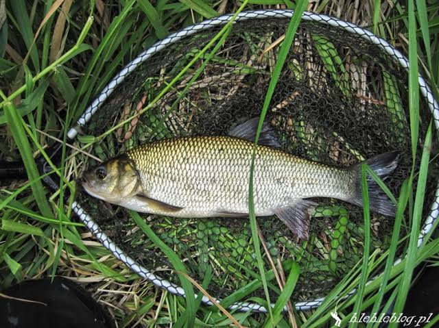

🐟 Jaź
Jaź to ryba słodkowodna należąca do rodziny karpiowatych. Można spotkać go w rzekach, jeziorach i innych wodach słodkich.
📋 Podstawowe informacje
📏
Rozmiar
Zwykle 30–50 cm
⚖️
Waga
Duże osobniki mogą ważyć kilka kg
🌊
Występowanie
Rzeki, jeziora i zbiorniki
⭐
Trudność
Średnia
🎣 Jak złowić jazia?
🪱 Przynęta
Można próbować na robaki, kukurydzę oraz małe przynęty używane do połowu ryb spokojnego żeru.
📍 Gdzie szukać?
W rzekach warto szukać go w spokojniejszych miejscach, przy roślinności i przeszkodach.
☀️ Kiedy łowić?
Jazia można łowić przez większą część sezonu, a jego aktywność zależy od warunków.